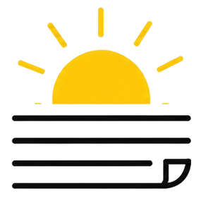

Ranní briefKaždé ráno výběr zhruba 36 nejdůležitějších zpráv ze stovek článků z 49 českých i zahraničních zdrojů — stručně, přehledně a bez šumu.
Každé ráno jeden e-mail. Odběr zrušíte jedním kliknutím. Jak nakládám s e-mailem
Hotovo — mrkněte do schránky
Na jsme poslali potvrzovací e-mail. Odběr se spustí, jakmile v něm kliknete na tlačítko. Nedorazil do pár minut? Podívejte se prosím i do spamu.
Každé ráno jeden e-mail: zhruba 36 nejdůležitějších zpráv ze stovek článků z 49 českých i zahraničních zdrojů.
Každé ráno jeden e-mail. Odběr zrušíte jedním kliknutím. Jak nakládám s e-mailem
Hotovo — mrkněte do schránky
Na jsme poslali potvrzovací e-mail. Odběr se spustí, jakmile v něm kliknete na tlačítko. Nedorazil do pár minut? Podívejte se prosím i do spamu.